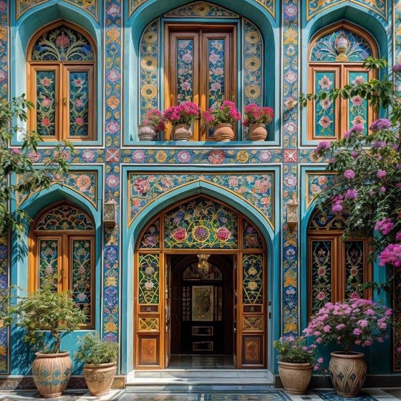

← Barcha e’lonlar
Xabarlaringiz bor, Turkiy alifbo tahsili 4-mavsumini boshlayapmiz.

Xabarlaringiz bor, Turkiy alifbo tahsili 4-mavsumini boshlayapmiz.
Jami 132 ta ariza tushdi.
Va’damizga koʻra, har bir arizachiga telegram orqali xat yuborildi.
Suhbatdan oʻtganlarni tabriklaymiz. Ularga tez-orada natijalar ma’lum qilinadi.
Turkiy alifbo tahsili 4-mavsumiga tushgan talabgorlar bilan suhbatlar hisoboti
O'gʻil bolalar:
Jami: 55 ta
Taklif yuborildi: 42
Taklif yuborib bo'lmadi: 2 ta
Suhbatga qatnashdi: 23 ta
Suhbatga qatnashmadi: 19 ta
Qayta ro'yxatdan o'tganlar (2x, 3x): 11 ta
(6 kishi uzrli qatnasholmadi, yana bir vaqtni belgilab suhbatga taklif qilinadi.)
Qiz bolalar:
Jami: 77 ta
Taklif yuborildi: 61 ta
Taklif yuborib bo'lmadi: 16
Qatnashmoqchi: 29 ta